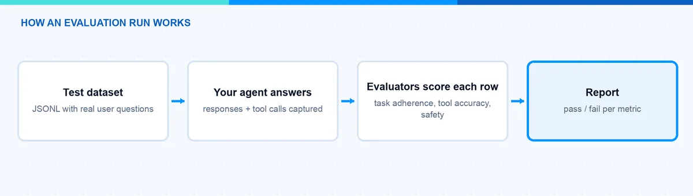
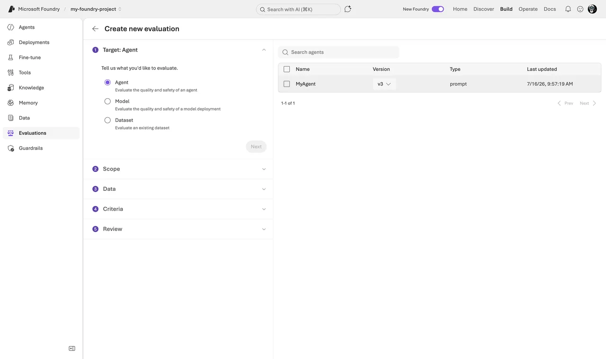
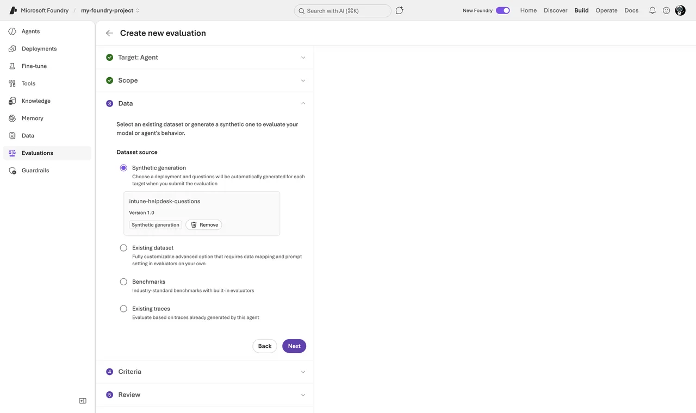
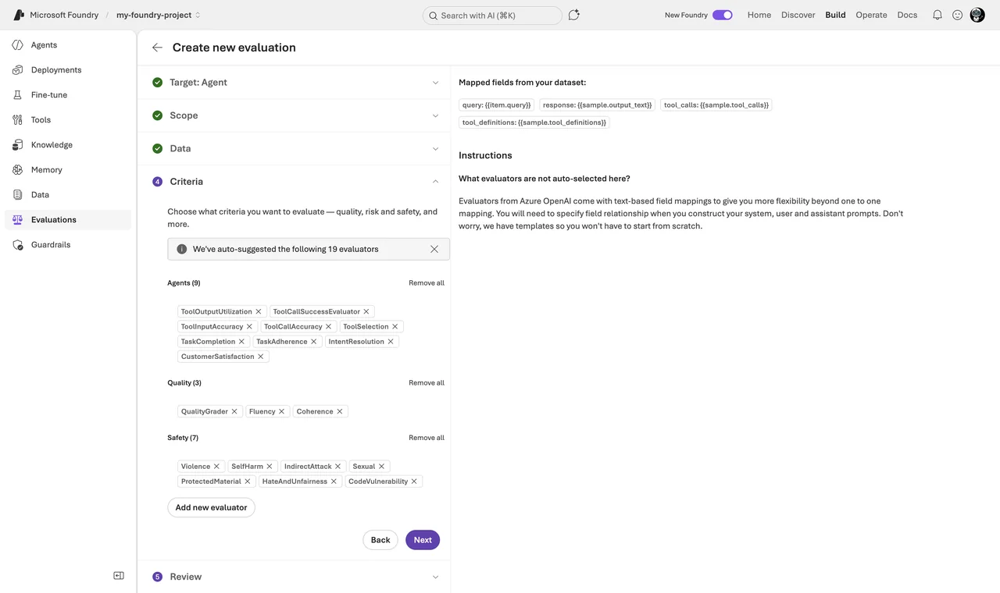
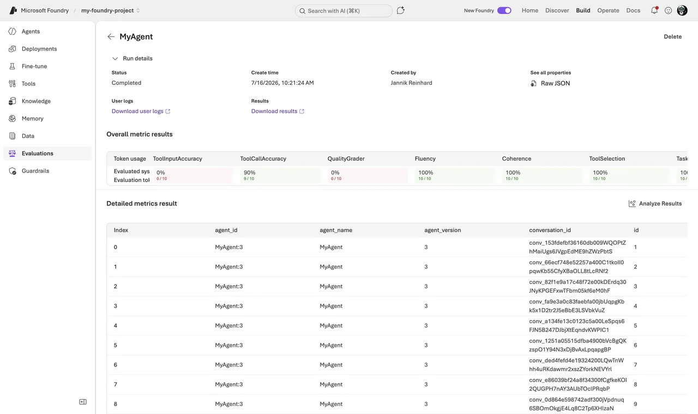
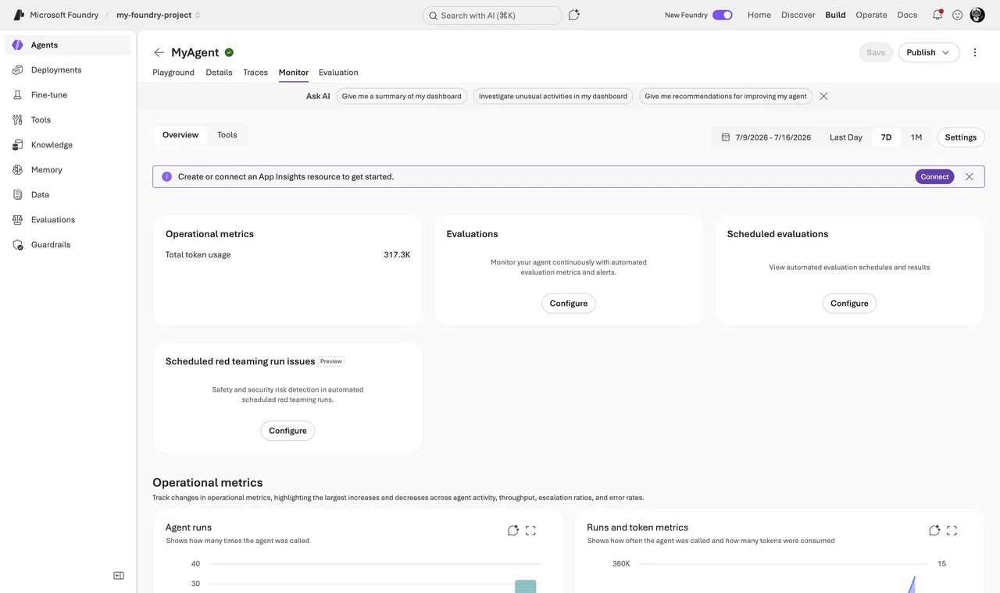
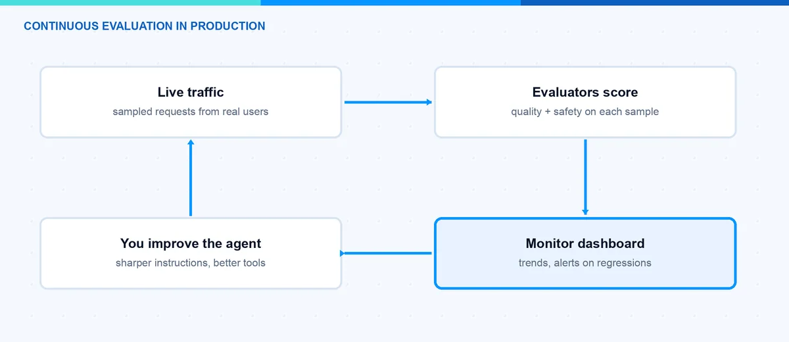

How to Evaluate AI Agents in Microsoft Foundry Step by Step
Many companies are building their first AI agents right now. Most of them test the agent by chatting with it a few times in the playground and then call it done. In this blog post I explain how to evaluate AI agents in Microsoft Foundry (formerly Azure AI Foundry) in a structured way. At the end you can run an evaluation in the portal or with the SDK, read the results, and set up continuous evaluation for production. If you do not have an agent yet, start with my post about building your first agent in Microsoft Foundry and come back here.
Why Should I Evaluate AI Agents at All?
An agent that âseems fineâ in the playground can still fail in production. The reason is simple. An agent is not a single answer. It is a chain of steps: understand the intent, pick a tool, call the tool with the right parameters, use the tool result, and write the final answer. Every step can go wrong. When I test manually, I only see five or ten happy-path conversations. Real users send hundreds of messy questions.
Evaluation fixes this. To evaluate AI agents in Foundry, you run them against a test dataset and let evaluators score every response. The evaluators work like unit tests for your agent. They return pass or fail per test case. With that you get a baseline and you can define a release gate, for example â85% task adherence or we do not shipâ. You can also compare two agent versions and see if your prompt change made things better or worse.
The good news: this is not a preview toy anymore. Evaluations, monitoring, and tracing in Microsoft Foundry became generally available in March 2026. Some individual evaluators are still marked as preview, but the workflow itself is production-ready. Agents were the big topic at Microsoft Build 2026 â I wrote about the whole agentic stack in my Build recap. Evaluation is the part of that stack that turns a nice demo into something you can ship with confidence.
Which Evaluators Does Foundry Offer?
Foundry brings a set of built-in evaluators to evaluate AI agents from different angles. Most of them use a model as a judge and return a pass/fail result with a short reasoning. There are three groups that matter for agents: agentic evaluators, quality evaluators, and safety evaluators. These are the ones I find most useful:
| Evaluator | What it checks | When I use it |
|---|---|---|
| Task Adherence (preview) | Does the agent follow its instructions and constraints? | Almost always. This is my baseline metric. |
| Intent Resolution (preview) | Did the agent correctly understand what the user wants? | Support and conversational agents. |
| Task Completion (preview) | Did the agent fully complete the task with a usable result? | Goal-oriented workflows and automation. |
| Tool Call Accuracy | Did the agent call the right tools with the right parameters? | Every agent that uses tools or APIs. |
| Groundedness | Is the answer backed by the provided context? | RAG agents, to catch hallucinations. |
| Relevance | Does the answer actually address the question? | RAG and Q&A scenarios. |
| Fluency and Coherence | Does the answer read well and hold together? | Quick general quality check. |
| Safety evaluators (Violence, Sexual, Self-harm, Hate and Unfairness) | Does the response contain harmful content? | Before every user-facing release. |
There are more, for example Tool Selection, Tool Input Accuracy, Tool Call Success, Task Navigation Efficiency, and Customer Satisfaction. You find the full list in the built-in evaluators reference.
Note: The AI-assisted evaluators need a judge model. You must have a model deployment in your project (for example gpt-4.1-mini) and select it as the judge. This judge model counts against your quota and produces token costs. The safety evaluators work differently â they run on the Azure AI Content Safety backend and need no judge deployment.
Note: Evaluators score either single turns (one question, one answer) or whole conversations. You cannot mix both levels in one run, so plan your dataset accordingly.

How Do I Evaluate AI Agents in the Foundry Portal?
The portal is the easiest way to evaluate AI agents when you start. You need a Foundry project with an agent, a model deployment for the judge, and the Foundry User role. The evaluation wizard then walks you through five steps:
- Sign in to the Microsoft Foundry portal (ai.azure.com) and open your project. In the left pane, open Evaluations and click Create.
- Select the target. You can evaluate an agent, a plain model, or an already recorded dataset of question-and-answer pairs. Choose your agent. Foundry will then send every test query to the agent and capture the full response, including the tool calls.

- Select the scope. You decide if the evaluators judge individual turns (single responses and their tool usage) or complete conversations (whole multi-turn chats). For a first run I take individual turns.
- Select the data. This step surprised me positively, because you have four options: let Foundry generate synthetic test data for you (you describe the scenario, it writes the queries), upload an existing dataset (JSONL or CSV with your test queries), use a benchmark, or evaluate existing traces from real usage. The traces option only works when an Application Insights resource is connected to your project.

- Select the testing criteria. The wizard auto-suggests evaluators that fit your agent â in my run it preselected Tool Call Accuracy, Task Adherence, Intent Resolution, Fluency, and Coherence. Add or remove what you need, for example the safety evaluators before a user-facing release, and pick the judge model.

- Review and create. Check the summary and submit the run. It takes a few minutes, depending on the dataset size.
When the run finishes, you find it under Evaluations. The results view shows the pass rate per evaluator at the top and a row-by-row table below. Every row has the individual score and a short reasoning from the judge. This reasoning is the most valuable part â it tells you why a row failed, not just that it failed. Often the fix is one sentence in the instructions, not a new model.

Hint: Start small. A dataset with 10 to 20 realistic queries already shows you where the agent struggles. You can grow the dataset later and reuse it for every new agent version.
How Do I Run an Evaluation with the SDK?
For repeatable runs and CI/CD pipelines I prefer to evaluate AI agents from code. The azure-ai-evaluation Python package wraps the same built-in evaluators. You run it locally against a recorded dataset and log the results to your Foundry project, so the run also appears in the portal:
# pip install azure-ai-evaluation azure-identity (run az login first â Entra ID is required)
from azure.ai.evaluation import (
evaluate, TaskAdherenceEvaluator, ToolCallAccuracyEvaluator, RelevanceEvaluator,
)
# Judge model used by the AI-assisted evaluators
model_config = {
"azure_endpoint": "https://<your-resource>.openai.azure.com",
"azure_deployment": "gpt-4.1-mini",
}
result = evaluate(
data="eval-dataset.jsonl", # one test case per line: query, response, tool calls, ...
evaluators={
"task_adherence": TaskAdherenceEvaluator(model_config=model_config),
"tool_call_accuracy": ToolCallAccuracyEvaluator(model_config=model_config),
"relevance": RelevanceEvaluator(model_config=model_config),
},
# Log the run into your Foundry project (visible in the portal)
azure_ai_project="https://<your-resource>.services.ai.azure.com/api/projects/<project>",
)
print(result["metrics"]) # aggregate scores, e.g. task adherence pass rateBecause this is plain Python, the same script runs on your laptop and in a GitHub Actions or Azure DevOps pipeline. That is the whole trick behind an evaluation gate in CI/CD: run the suite on every change, compare against your baseline, fail the pipeline if the pass rate drops.
If you want the cloud-side variant that targets a live agent instead of a recorded dataset, that flow runs through the projectâs OpenAI client: each built-in evaluator has a stable ID like builtin.task_adherence that you reference as testing criteria, and Foundry generates the responses for you server-side. The complete sample is in the evaluate your AI agents guide.
Note: Evaluations require Microsoft Entra ID authentication. API keys do not work for evaluations at all. If a run fails with an authorization error, check that your identity holds the Foundry User role on the project.
How Do I Evaluate AI Agents in Production?
A one-time evaluation is a snapshot. Production traffic changes, and your agent can drift. For this Foundry offers continuous evaluation. It samples your live agent responses and runs evaluators on them automatically â quality dimensions like task adherence and tool-call success, but also risk dimensions like sensitive-data leakage. This way you evaluate AI agents on real traffic, not only on your test dataset. You see the scores on the agentâs Monitor tab, together with latency, token usage, and run success rate, and you can set up alerts.
Two prerequisites, then it is a few clicks: connect an Application Insights resource to your project, and make sure the project managed identity holds the Foundry User role â continuous evaluation runs under this identity. Then open the agentâs monitoring dashboard and select Set up continuous evaluation. Without the prerequisites, the monitoring charts simply stay empty, which is a support ticket I have seen more than once.

On top of that there is the AI Red Teaming Agent. Evaluators measure how the agent behaves with normal input; red teaming asks how it behaves when someone attacks it. The AI Red Teaming Agent is built on PyRIT, Microsoftâs open-source Python Risk Identification Tool, and probes your agent with adversarial prompts â including encoded and rewritten variants that try to slip past your guardrails. The result is an Attack Success Rate per risk category, logged to your Foundry project as a scorecard. You can run scans locally with the evaluation SDK or schedule them centrally. Details are in the AI Red Teaming Agent documentation. One honest note: check the current preview or GA status in the docs before you build a formal compliance process on top of it.

To evaluate AI agents is not a one-time task. My rhythm is simple: build a small test dataset early, run an evaluation for every agent change, keep task adherence and tool call accuracy as release gates, run a red teaming scan before major releases, and let continuous evaluation watch production. That is maybe one day of setup work, and it is the difference between hoping and knowing. With this you catch the problems in the evaluation report and not in a user complaint.
I hope this is a little help.
Stay healthy, Cheers Jannik